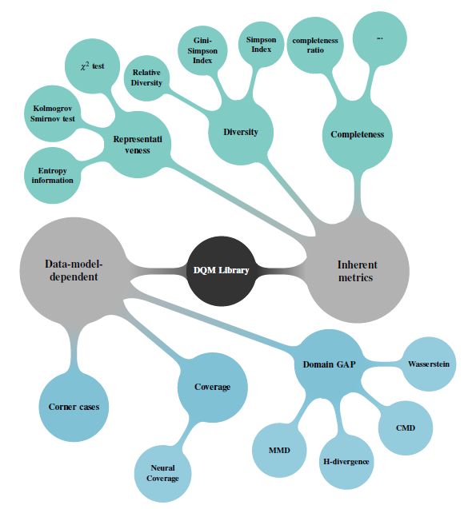

DQM-ML: Data Quality Metrics for Machine Learning
Workspace common Badge and CI / CD informations


Origins - who created DQM-ML
The library was originally developed in the program:
Important
This repository groups all packages derived from dqm-ml to initiate what shall become dqm-ml v2.0.0. All what has been implemented rely on (Definitions from Confiance.ai program) a research program, which focused on trustworthy AI for industry. Asset developped during the program were transfered to European Trustworthy AI Association and
This work was carried out as part of activities conducted and partially funded by the European Trustworthy AI Association, which aims to shape trustworthy AI and empower industry through state-of-the-art, open-source methodologies and tools.
For more technical and scientific details, refer to:
- HAL Publication — Academic paper describing the methodology
- ETAIA Asset
- Scientific Deliverable — Detailed technical documentation
-
Why creating DQM-ML-V2 — Evolution need in dqm-ml
Available on PyPI
Install individual packages based on your needs:
| Package | Description | PyPI |
|---|---|---|
| dqm-ml-core | Core API & Metrics Processors (Completeness, Representativeness, Diversity) |  |
| dqm-ml-job | Orchestration, streaming data loaders, and output writers |  |
| dqm-ml-images | Features Processors (Visual feature extraction from images) |  |
| dqm-ml-pytorch | Gap Processors (Domain Gap) + Features Processors (Image Embeddings) |  |
Note: The
dqm-mlpackage is the CLI wrapper.
Documentations
-
Quick Start: Get started in 5 minutes.
- Release Notes: What's new in the latest version.
- Architecture & Rational: The "why" and "how" of V2.
- Project Overview — Package structure and development conventions
- Metrics Guide: Detailed list of available metrics and their configurations.
- Configuration Guide: How to write pipeline configuration files.
- Roadmap & Limitations: Known issues and planned evolutions.
- Contributing: How to set up the development environment and contribute.
What is DQM-ML?
DQM-ML (Data Quality Metrics for Machine Learning) is an open-source Python library that helps you assess and quantify the quality of your datasets. Whether you're building ML models, training neural networks, or preparing data for analysis, DQM-ML provides a suite of Metrics to measure data completeness, representativeness, and distribution gaps.
Think of it as a health check for your data — DQM-ML checks your dataset's vital signs before you feed it to your models.
Why Data Quality Matters
We've all heard the saying "garbage in, garbage out." But how do you measure if your data is any good? That's exactly what DQM-ML helps you answer.
Poor data quality can lead to:
- Biased models that don't generalize well
- Unexpected failures in production
- Wasted resources training on bad data
- Inconsistent results across different datasets
DQM-ML gives you concrete numbers to work with, so you can make informed decisions about your data before investing in training.
Key Features
- Multiple Quality Metrics — Measure completeness, representativeness, domain gaps, and visual quality
- Streaming Architecture — Process datasets larger than available memory without loading everything at once
- Modular Design — Install only the components you need
- Easy to Use — Simple CLI for quick checks, powerful Python API for integration
- Extensible — Add your own metrics or data loaders with the plugin system
See also: Formal and Core Concepts for definitions of Sample, Feature, Metric, Domain Gap, Embedding, Data Selection, and related terminology.
Which metrics are available
Metric computed on data selection rely on several approches as described in the figure below and associated publications

In the current version, the available capabilities are grouped by interface:
Features (per-Sample enrichment — adds columns that feed into Metrics):
- Visual Features — Extract image quality indicators (luminosity, contrast, blur, entropy). These Features can feed into tabular Metrics (Completeness, Representativeness, Diversity) as input columns.
- Embedding Features — Generate vector Embeddings from images (e.g., ResNet). These Embeddings feed into Domain Gap.
Metrics (aggregated over a Data Selection):
- Completeness — Ratio of non-null values in scalar columns.
- Representativeness — Statistical tests against a target distribution:
- \(\chi^2\) Goodness of fit test for Uniform and Normal Distributions
- Kolmogorov Smirnov test for Uniform and Normal Distributions
- Granular and Relative Theoretical Entropy (GRTE)
- Diversity — Category distribution spread:
- Simpson and Gini-Simpson indices
- Shannon Entropy
- Richness (category count)
Domain Gap (pairwise comparison between two Data Selections):
- MMD — Maximum Mean Discrepancy (Linear, RBF, and Polynomial kernels)
- CMD — Central Moment Discrepancy
- Wasserstein — 1D Earth Mover's Distance
- FID — Fréchet Inception Distance
- PAD — Proxy A-Distance
- KLMVN — KL-Divergence (Multivariate Normal Distribution)
Installation
Choose the method that fits your workflow:
Using pip
Recommended for testing or using the libs in a virtual environment
Select only the optional dependencies you need:
Using conda
The configuration files and example scripts referenced below are part of this repository. Make sure you have it cloned before running the examples.
Execution with cli provided dqm-ml
Generate the example data (do this once before running the metrics):
Run metric processing jobs using a configuration file:
The script and example can be found at examples/script/generate_data.py and examples/config/completeness.yaml Other configuration examples can be found in the examples/config/ directory.
Call the same process from your script / code
def compute_metric() -> None:
"""Example script to compute a metric using a YAML configuration."""
# Load configuration file or create a dictionary structure with the same keys
cur_file_path = os.path.abspath(__file__)
config_path = os.path.join(os.path.dirname(cur_file_path), "../config/completeness.yaml")
config: dict[str, Any] = {}
with open(config_path) as f:
config = yaml.safe_load(f)
# Execute the job with the loaded configuration, output are directly saved to disk
exec_qml_job(config["config"])
# A more granular API will be provided in future releases to access intermediate results
if __name__ == "__main__":
compute_metric()
this example can be found in examples/script/completeness.py and executed with:
Direct usage of metrics from your python code on data
Workspace Structure
References
DQM-ML V2 is built from dqm-ml implementation performed during the confiance.ai programme
@inproceedings{chaouche2024dqm,
title={DQM: Data Quality Metrics for AI components in the industry},
author={Chaouche, Sabrina and Randon, Yoann and Adjed, Faouzi and Boudjani, Nadira and Khedher, Mohamed Ibn},
booktitle={Proceedings of the AAAI Symposium Series},
volume={4},
number={1},
pages={24--31},
year={2024}
}
DQM-ML V2 is referenced as an ETAIA Asset
@software{etaia_2026_asset,
title = {dqm-ml},
author = {{Safenai}},
year = {2026},
version = {v2.0.0-rc},
url = {https://github.com/Safenai/dqm-ml-workspace},
howpublished = { https://catalog.trustworthy-ai-association.eu/records/968fj-fk177}
note = {This work was carried out as part of activities conducted and partially funded by the European Trustworthy AI Association, which aims to shape trustworthy AI and empower industry through state-of-the-art, open-source methodologies and tools.
}